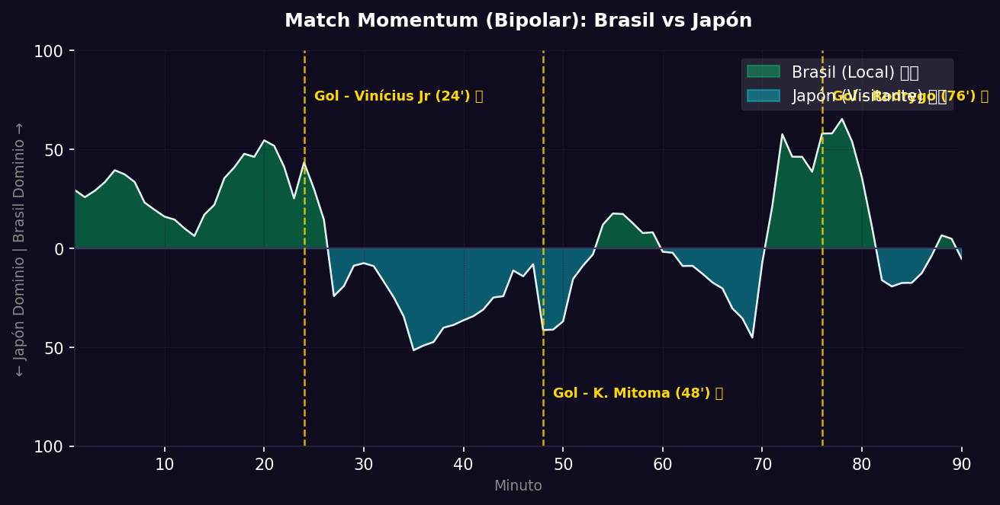

📝 Crónica y Análisis Posterior (Post-Partido)
🎯 PREDICCIÓN EXACTA
⚽ Resumen del Partido (Resultado Real: Brasil 2 - 1 Japón)
Brasil selló su clasificación a los Octavos de Final con una trabajada victoria por 2-1 sobre una selección japonesa que compitió al máximo nivel. En el primer tiempo, la Canarinha impuso condiciones y abrió el marcador en el minuto 24' gracias a una gran jugada individual de Vinícius Jr, quien desbordó por la banda izquierda antes de definir cruzado para el 1-0. Sin embargo, Japón reaccionó de inmediato tras el descanso. En el minuto 48', Kaoru Mitoma culminó un contragolpe quirúrgico con una sutil vaselina sobre Alisson para decretar el empate transitorio.
Con el marcador igualado, Brasil adelantó líneas pero se topó con un bloque defensivo japonés sumamente denso y ordenado. El seleccionador brasileño movió el banco y fue en el minuto 76' cuando llegó el gol definitivo: Rodrygo aprovechó una asistencia de taco dentro del área y definió raso al poste derecho para decretar el 2-1 final y asegurar el boleto a la siguiente ronda.
🔮 Impacto en la Fase Final (Dieciseisavos) y Proyecciones
- Ajuste del Algoritmo: Para Brasil, este triunfo reafirma su condición de firme candidato al título, demostrando variantes ofensivas y madurez colectiva para desarmar bloques ordenados en eliminación directa. Para Japón, la eliminación representa un cierre digno de torneo, evidenciando un notable crecimiento en transiciones rápidas y solidez organizativa.
- Proyección de la Siguiente Fase (Octavos de Final): Brasil avanza a la siguiente ronda, donde se enfrentará a la sorpresiva selección de Paraguay, que eliminó a Alemania en tanda de penales.
📈 Análisis del Match Momentum y Match Point (Punto Crítico)
El gráfico del Match Momentum muestra un partido con fases bien marcadas. Brasil controló la intensidad en un 58% de las acciones, con picos marcados durante la primera mitad y un asedio final en el último cuarto de hora de juego. Japón, por su parte, tuvo su momento de mayor dominio e intensidad justo al inicio del segundo tiempo (minutos 46' a 55') logrando materializar su gol de empate.
El Match Point (Punto Crítico) del encuentro se situó en el minuto 70' con el ingreso de Endrick. La presencia del joven delantero fijó a los centrales de Japón y abrió el espacio interior que Rodrygo aprovechó seis minutos después para definir con total comodidad el gol que sentenció la llave.
Gráfico: Match Momentum (Intensidad de Ataque)

🇿🇦 Brasil: Análisis Táctico
Ventajas
- Ataque dinámico y desequilibrante: El desborde por bandas de Vinícius Jr y la movilidad de Rodrygo ofrecen múltiples variantes ofensivas difíciles de contener.
- Transición defensiva sólida: Solo encajaron 1 gol en la fase de grupos, mostrando un gran equilibrio en el mediocampo defensivo.
- Profundidad de plantilla: Cuentan con revulsivos de élite como Endrick para refrescar el ataque en el segundo tiempo.
Desventajas
- Espacios a la espalda de los laterales: Sus carrileros se proyectan constantemente al ataque, lo cual puede ser explotado por la velocidad de Mitoma.
- Problemas ante bloques muy densos: Suelen impacientarse y recurrir a disparos lejanos si no logran penetrar la frontal del área temprano en el partido.
🇨🇦 Japón: Análisis Táctico
Ventajas
- Disciplina táctica y orden: Excelente coordinación colectiva tanto en fase defensiva como en la presión tras pérdida.
- Transiciones rápidas letales: La velocidad y asociación de Kubo y Mitoma en contragolpe es letal frente a defensas abiertas.
- Gran efectividad goleadora: Anotaron 7 goles en grupos, demostrando gran contundencia en las oportunidades generadas.
Desventajas
- Fragilidad defensiva ante la élite: Concedieron 3 goles en grupos, mostrando ciertas lagunas cuando son sometidos a un asedio continuo por pasillos interiores.
- Menor fortaleza física: Sufren en duelos individuales divididos contra bloques muy físicos como el de Brasil.
📊 Pizarras y Gráficos Tácticos
Perfil Táctico (Brasil)

Perfil Táctico (Japón)

 Japón
Japón